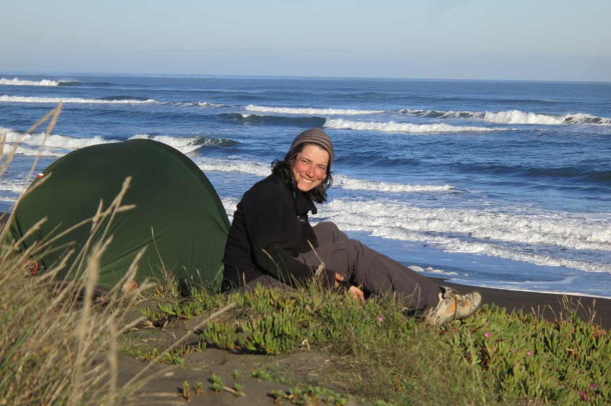

Patagonia, sola, or why I am travelling alone on one wheel
My unicycle and I have been in a long term relationship for so long that people wonder if I’ve ever tried bicycles before. It has always been a big part in my life, never far, around on so many occasions. We have even traveled together with friends before. But it was time for just the two of us to take a trip. A trip? More of an adventure or a journey this time: the goal was to meet people from different cultures and to meet my own self at the same time. So here I am, riding my unicycle from Ushuaia, Argentina to Santiago, Chile.
Why a unicycle
To meet others, my unicycle is my better half: it’s a great bait to attract people’s interest. No offence to cyclists (one wheel or two…any type of leg-powered expedition is the ticket to freedom for me: independence and transcendence) but there aren’t many places in the world untraveled by bike. It’s especially true along the route I’ve chosen, which has grown more and more popular in the last few years: during summer, the towns of Tierra del Fuego and Patagonia see a lot of cyclists passing through each day. So, doing it a bit differently makes it more exciting for the people I meet and for myself. How many times have I heard “we’ve seen bicycles, motorcycles, recumbents, tricycles, scooters, people pushing carts… we thought we had seen it all, but a unicycle, it’s a first!” I’ve been asked lots of strange questions and I wondered why. Finally, I got it: “No, the unicycle is not faster. No, the unicycle is not easier…. There aren’t really any advantages over the bicycle except to pique your curiosity and meet you!”
"I’m here to enjoy the surroundings, and so far Patagonia has been pleasing my eyes, breath, and mind!"
Let’s be honest, I suffer way more than I would on a bike. I never stop pedalling, even when I am going downhill. The gravel roads and strong winds of Patagonia demand a lot of work to maintain my balance, especially since I am carrying most of my gear in my backpack. In the meantime, I’m in no rush, I’m here to enjoy the surroundings, and so far Patagonia has been pleasing my eyes, breath, and mind!
Why alone
When it comes to getting to know myself, the unicycle remains unchanged: a beautiful piece of cold steel, quiet, just waiting to be ridden, leaving me to my own thoughts. I’m not a solitary person at all, quite the opposite, but I don’t regret one instant going alone. People have a hard time understanding, especially when they learn I have a boyfriend back home. But, how often do you give yourself the time you really need to reflect on life and what’s important to you? No, I’m not talking about my relationship with my boyfriend as some people have joked! I’m lucky he is supporting me in my adventure, and that today’s easy access to communication makes our separation easier.
This journey has proven to be one of the most enriching experiences of my life: so much time to think, to observe nature, and to learn from the moment. As my work in the last few years hasn’t been the most fulfilling, it feels good to accomplish something of my own and give my independent nature the opportunity to fully express itself. Of course it’s not always easy! Experiencing this adventure alone makes me admire the other solo adventurers out there even more. Completing the many daily tasks of the trip on your own is so much work: packing, managing your food supply, finding and setting up camp, cooking… even just taking a picture of yourself by running in front of the timer! For me, the hardest part is the mental challenge: having to make so many “smart” decisions in an unfamiliar environment: what route to take, when to stop…
As a Women
“Sola, no tienes miedo?” “Alone, aren’t you afraid?” I should start counting how many times I’ve heard the question. Patagonia is still a safe place. What is a safe place anyway? Our prejudices often deceive us. Besides, so many people care for me along the road, probably even more because I’m a woman. I’ve never felt in real danger. Sure, there are times when I feel a little uncomfortable; I feel suspicious. For example, that night when a guy decided to park across the road from where I was planning to camp. He stayed in his car, and there was nobody else around. “Why? What is he doing just right there? Exactly where I am….” A half an hour later, I got it: “Oh, he’s waiting for the late night bus, and I’m sheltered at a bus stop; that makes sense.” I’m convinced that by being reasonably careful and listening to my gut, but at the same time being mostly trusting, good things will happen to me. In the meantime, pushing the limits of my comfort zone makes me grow. I can’t say I’ve definitely defeated my fear of dogs, but I’m doing so much better than at the beginning of my adventure.
In the end, the “Por qué” or the “Why” has been the most recurring question along the route, and at first, I wasn’t sure what to say, where to start. Putting this into words, explaining my adventure, became necessary. In reality though, I feel that the meaning I’m giving to this journey evolves all the time through the people I meet–locals and other travelers–and through my own thoughts. Who knows, maybe only at the end of this trip, will I really be able to answer that question. Or if by any chance you are a unicycle whisperer, perhaps my “monocyclette” knows better.
Anne-Sophie Rodet, originally from France, has been living in Vancouver, Canada for six years. She started unicycling when she was six years old. She is the 2010 American Champion in Mountain Unicycling (MUni) Technical Downhill and the 2012 World Champion in MUni Obstacle, 30 and up. Her latest adventure is touring on her unicycle through Argentina and Chile.